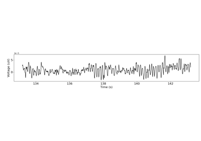
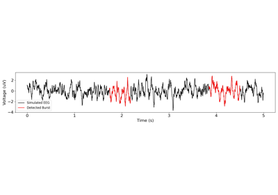
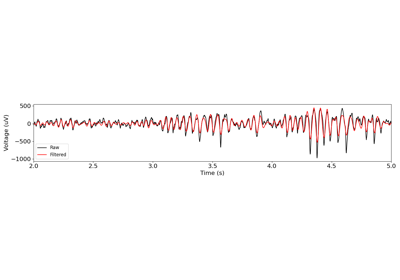
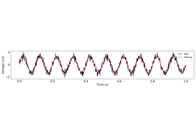
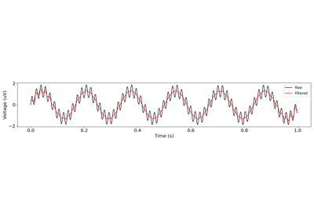
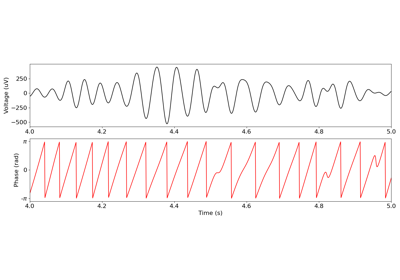

neurodsp.plts.plot_time_series¶
- neurodsp.plts.plot_time_series(times, sigs, labels=None, colors=None, ax=None, **kwargs)[source]¶
Plot a time series.
- Parameters:
- times1d or 2d array, or list of 1d array, or None
Time definition(s) for the time series to be plotted. If None, time series will be plotted in terms of samples instead of time.
- sigs1d or 2d array, or list of 1d array
Time series to plot.
- labelslist of str, optional
Labels for each time series.
- colorsstr or list of str
Color(s) to use to plot lines.
- axmatplotlib.Axes, optional
Figure axes upon which to plot.
- **kwargs
Keyword arguments for customizing the plot.
Examples
Create a time series plot:
>>> from neurodsp.sim import sim_combined >>> from neurodsp.utils import create_times >>> sig = sim_combined(n_seconds=10, fs=500, ... components={'sim_powerlaw': {'exponent': -1.5, 'f_range': (2, None)}, ... 'sim_oscillation' : {'freq': 10}}) >>> times = create_times(n_seconds=10, fs=500) >>> plot_time_series(times, sig)
Examples using neurodsp.plts.plot_time_series¶

Using NeuroDSP with MNE

Burst Detection

Filtering

FIR Filters

IIR Filters


Simulating Combined Signals
Modulating Signals
Simulating Cycles & Transients
Simulating Cycles & Transients



Time-frequency analysis